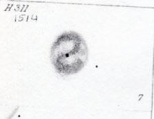
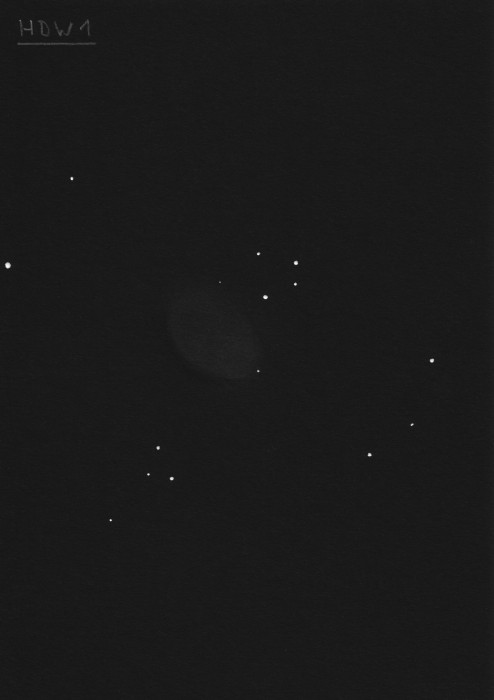

NGC 1514, a revolutionary planetary
- Name: NGC 1514 = Crystal Ball Planetary
- Aliases: PK 165-15.1 = PN G165.5-15.2
- RA: 04h 09m 17s
- Dec: +30° 46' 33"
- Type: Planetary Nebula
- Size: 136" x 121"
- Distance: 600-800 light years
William Herschel discovered NGC 1514 on 13 Nov 1790 (sweep 980) and recorded "A most singular phenomenon. A star of about 8th magnitude with a faint luminous atmosphere of a circular form, and about 3' in diameter. The star is perfectly in the center and the atmosphere is so diluted, faint and equal throughout that there can be no surmise of its consisting of stars; nor can there be a doubt of the evident connection between the atmosphere and the star. Another star, not much less in brightness and in the same field with the above, was perfectly free from any such appearance."
The symmetry of NGC 1514 forced Herschel to rethink his ideas of the nature of planetary nebulae. He previously assumed all nebulae were unresolved stellar clusters of some kind, appearing nebulous on account of their great distance. After viewing NGC 1514, he was convinced of the existence of pure nebulosity, out of which individual stars or planets were formed and he no longer expected every nebula to be resolved with enough aperture. This realization also halted his interest in seriously observing with his 40-foot telescope (48-inch aperture).
A total of 20 observations were made using Lord Rosse's 72" with one of the earliest (13 Jan 1852) describing NGC 1514 as a "new spiral of an annular form round the star, which is central; Brightest part is south-following the star, spirality is very faint, but I have no doubt of its existence". Here's a sketch made at Birr Castle --

I don't see a spiral pattern, but there's certainly an interesting structure in NGC 1514. Here's how it looked in my 17.5" --
At 100x, moderately bright, round, ~2' halo surrounding a prominent mag 9.5 star. Excellent filter response to UHC and OIII blinking while the H-beta filter killed the PN (OIII/H-beta = 12). Using the OIII filter, the surface brightness was noticeably uneven, with the NW quadrant of the rim clearly brighter. The SE end was also weakly enhanced while the center and ends of the minor axis were slightly darker. At 220x using a UHC filter, the halo appeared nearly 2.5' in diameter. There was a small, darker "hole" surrounding the central star and the halo was clearly irregular with a brighter "knot" on the SE side, while the NW portion of the halo was brighter along the rim.

In Jimi Lowrey's 48-inch at 610x (unfiltered), the surface brightness is very irregular and the rim varies greatly in thickness and brightness -- it's very bright in the northwest quadrant, along roughly a 70° arc. A second enhanced portion is along the southeast edge (~35° arc) and a third slightly smaller, bright region (more circular) is on the east end. The rim is weaker on the south or south-southwest end as well as on the north and northeast side. The rim also bulges out on the southeast side (near the two enhancements on this end) and to a lesser extent on the northwest end and the south end. A 17th magnitude star is visible at the southwest edge. The mag 9.5 star and a very faint companion to its southeast are surrounded by a darker central hole.
Next clear Fall or Winter night, check out the Crystal Ball Nebula!
GIVE IT A GO AND LET US KNOW!
Steve's follow-up — November 23rd, 2015, 10:26 PM
I mentioned the planetary was observed 20 times with the 72-inch in Ireland. Here are some of the observations (besides the one I originally posted)
1855, Oct 7. Annular, but with a break in the south side of the annulus, or perhaps it is a spiral.
1856, Oct 31. I feel certain of a dark space nearly preceding the central star, the shape of the whole is only conjectural; there is a star plain north-preceding the neb.
1857, Dec 7. The break in the south side of the ring of neb is quite easily seen; between this ring and the central star is not black, but filled with more faint nebulosity.
1858, Jan 9. Observed for a sketch; last observation correct as to shape, the brightest part is south-following, and the next brightest is on the opposite side, and with ½-inch single lens the whole annulus has a mottled look.
1862, Nov 20 (refers to the sketch Uwe posted). It is very difficult to determine its true shape. I think there is a star at Alpha in a little knot almost detached from the nebula. The opening at Delta is easily seen. Sometimes at Beta the little knot seemed attached, and occasionally as if it extended south for some distance. At Gamma I was doubtful whether the ring is closed or not.